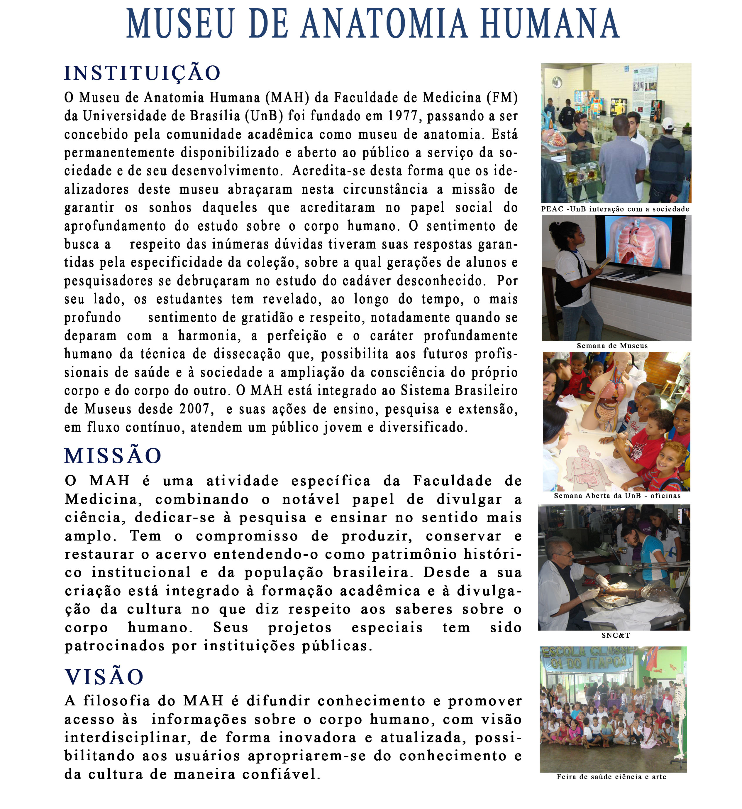

<ion-header>
  <ion-navbar color="violet">
    <ion-title>
      Museu de Anatomia - UnB
    </ion-title>
  </ion-navbar>
</ion-header>

<ion-content padding >
  <ion-grid class="bg-white">
    <ion-row justify-content-center>
      <ion-col col-5>
          
      </ion-col>
      <ion-col col-11>
        
      </ion-col>
    </ion-row>
  </ion-grid>
</ion-content>
